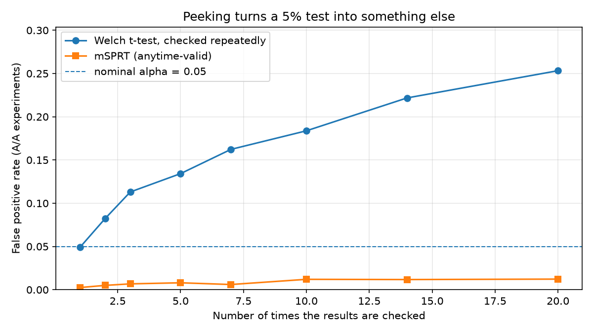

Design and analysis of A/B experiments: power and sample size, hypothesis tests, bootstrap, sample-ratio mismatch, and a sequential peeking correction — every method validated by simulation.
Repeatedly checking a fixed-horizon test and stopping as soon as it turns significant inflates the false-positive rate far beyond the nominal 5%. The table below reports the observed false-positive rate under the null hypothesis as a function of the number of interim looks, for a standard Welch t-test versus the mixture sequential probability ratio test (mSPRT), which is valid under continuous monitoring.
| Interim looks | Welch t-test (fixed horizon) | mSPRT (anytime-valid) |
|---|---|---|
| 1 | 4.9% | 0.2% |
| 2 | 8.2% | 0.5% |
| 3 | 11.3% | 0.7% |
| 5 | 13.4% | 0.8% |
| 7 | 16.2% | 0.6% |
| 10 | 18.4% | 1.2% |
| 14 | 22.2% | 1.2% |
| 20 | 25.3% | 1.2% |
At twenty looks the fixed-horizon test raises a false positive roughly one time in four; the mSPRT holds close to its nominal level throughout.

Each statistical procedure is checked by Monte Carlo simulation against its theoretical guarantee: the observed error or power must fall within Monte Carlo error of the claimed value.
| Scenario | Claim | Empirical | MC error | Verdict |
|---|---|---|---|---|
| Welch t-test, A/A (no effect) | 0.0500 | 0.0538 | ±0.0023 | pass |
| Two-proportion z-test, A/A (no effect) | 0.0500 | 0.0497 | ±0.0022 | pass |
| Welch t-test, A/B (d = 0.2, n = 400) | 0.8065 | 0.8077 | ±0.0039 | pass |
| Sample size for 80% power (n = 14,745/arm) | 0.8000 | 0.7929 | ±0.0041 | pass |
| mSPRT, A/A with 10 looks (anytime-valid) | ≤ 0.0500 | 0.0110 | ±0.0010 | pass |
ab-lab is a Python package for the full experiment lifecycle: power and sample-size
calculations; Welch, two-proportion, Mann–Whitney and bootstrap tests; a sample-ratio-mismatch
guard; and mSPRT for valid sequential monitoring. statsmodels is used only as a test
oracle, never as a runtime dependency — an unverified hand-rolled statistic is worth less than a
verified one. The design decisions are recorded as ADRs in the repository.